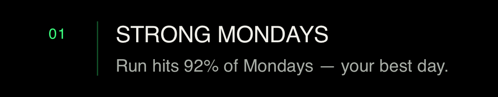

02 / TODAYOne day.
One day.
Your way.
Organize habits into pages, set a target, and record progress as the day unfolds. A useful beginning can be small.
PAGES · HABITS · PROGRESSA SMALLER WAY FORWARD NO. 01 / A WORK IN PROGRESS
Habit Map is a place to see your practice take shape. Mark a day. Find a rhythm. Come back when you can.
A habit has
more than one
good day.
Habit Map puts your days in view without turning a missed one into the whole story. Today gives you a place to begin; the atlas helps you see the longer arc.
Organize habits into pages, set a target, and record progress as the day unfolds. A useful beginning can be small.
PAGES · HABITS · PROGRESSA calendar heatmap gives the longer view. Filter by page, open a day, and notice the rhythm that a single streak cannot tell.
36 WEEKS · DAY DETAIL · PAGE FILTERSIllustrative calendar pattern. The native calendar component is implemented in the app source.
Insights surface patterns from your habit history. The app also has a calm mode banner that can invite a gentler pace when consistency dips.
INSIGHTS · CALM MODE
Habit Map is under development. Explore the project and follow its progress on GitHub.
Explore the project